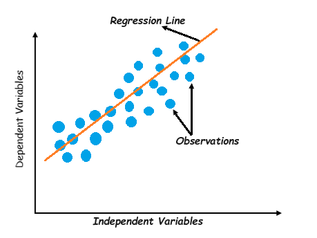
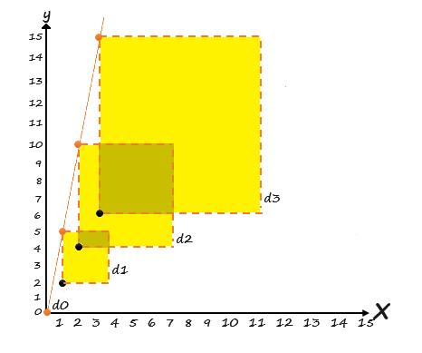

So far we have learnt the introduction part of Machine Learning. In this tutorial we will start by looking at the Linear Regression model, one of the simplest models there is. We will discuss to train this model. Lets start!
Linear Regression
Linear Regression is one of the simplest supervised learning algorithms that computes the linear relationship between the dependent variable and one or more independent features by fitting a linear equation to observe data.
When there is only one independent feature, it is known as Simple Linear Regression, and when there are more than one feature, it is known as Multiple Linear Regression.
Linear regression makes predictions for continuous/real or numeric variables such as sales, salary, age, product price, etc.
What is Regression?
Regression is a technique to determine the relationship between two or more variables.
Regress means predicting one variable from another.
Correlation is a measure that describes the strength of relationship between two variables. Regression explains in more detail about this strength
Types of Linear Regression
There are two main types of linear regression:
Simple Linear Regression
Multiple Linear regression
Simple Linear Regression
Linear regression shows the linear relationship between the features (independent variable) and the target(dependent variable), consequently called linear regression.
If there is a single feature i.e. input variable (x), such linear regression is called Simple Linear Regression.
The equation for simple linear regression is:
Y = θ0 + θ1x
Where:
• Y is the target or dependent variable
• x is the feature or independent variable
• θ0 is the intercept
• θ1 is the slope
In machine learning, these variables (no. of bedrooms, sq. ft. area) are called features.
Multiple Linear Regression
what if we have 2 features?
The equation of linear regression with 2 features will be:
Y = θ0 + θ1x1 + θ2x2
What about n number of features?
If there are more than one input variable (features), such linear regression is called multiple linear regression.
The equation for multiple linear regression is:
Y = θ0 + θ1x1 + θ2x2 + θ3x3 + .... + θnxn
Where:
• Y is the target or predicted or dependent variable
• n is the number of features
• x1, x2,....,xn are the features or independent variable. So xi is the ith feature value
• θ0 is the intercept
• θ1, θ2,...,θn are the model parameters
Linear Regression Line
The above graph presents the linear relationship between the dependent variables and independent variables. The line is referred to as the best fit straight line. Based on the given data points (obervations), we try to plot a line that fits the best.
A regression line can be a Positive Linear Relationship or a Negative Linear Relationship.
Positive Linear Relationship
If the dependent variable increases on the Y-axis and independent variable increases on X-axis, then such a relationship is termed as a positive linear relationship.
Negative Linear Relationship
If the dependent variable decreases on the Y-axis and independent variable increases on the X-axis, then such a relationship is called a negative linear relationship.
The goal of the linear regression algorithm is to get the best values for θ0 and θ1 to find the best fit line.
The best fit line should have the least error means the error between predicted values and actual values should be minimized.
What is best fit line?
Our primary objective while using linear regression is to locate the best-fit line. Let's understand this with below snaps.
• Suppose we have three variables.
• Start by drawing a random lines to see how bad or good this line is.
• Lets calculate the error between these data points and line to see the distances if the error line increases or decreases.

From above error representation, we can conclude that line of (iv) graph is having less error compared to others lines.
To get best-fit line, the error between the predicted (point on line) and actual values should be kept to a minimum.
Above graph shows the the best fit line withing the data points which can be get by minimizing the error between actual data point and predicted point (which lies on the line). Best fit line can be achieved by adjusting the θ0 and θ1 value.
We utilize the cost function to compute the best values in order to get the best fit line since different values for weights or the coefficient of lines result in different regression lines.
Lets understand what the cost function is in brief.
Cost function
The cost function (also known as loss function) is the error representation between the actual value yi and the predicted value ŷi.
It measures the performance of a machine learning model for a data set. The returned value is usually called cost, loss or error. The goal is to find the values of model parameters (θ-slope, c-intercept) for which cost function return as small a number as possible.
The residual error at some point i is the difference between the actual value (yi) and predicted value (ŷi) :
| yi - ŷi | |||
Lets say we have some data samples given below:
| data sample | output | predicted values, ŷ = θ1x, [θ1 = 5] |
|---|---|---|
| x0 = 0 | y0 = 0 | ŷ = 5 x 0 = 0 |
| x1 = 1 | y1 = 2 | ŷ = 5 x 1 = 5 |
| x2 = 2 | y2 = 4 | ŷ = 5 x 2 = 10 |
| x3 = 3 | y3 = 6 | ŷ = 5 x 3 = 15 |
visualize the model’s results. For θ1 = 5.0 for now.
We can observe that the model predictions are different than expected values. Lets calculate the error distances. We already know the distance formula.
distance = ŷ - y
According to the formula, calculate the errors between the predictions and expected values:
d0 = 0 - 0 = 0
d1 = 5 - 2 = 3
d2 = 10 - 4 = 6
d3 = 15 - 6 = 9
Lets sum up these errors:
Total error = d0 + d1 + d2 + d3
Total error = 0 + 3 + 6 + 9 = 18
Unfortunately, we still have to consider all cases so let’s try picking smaller weights and see if the created cost function works. We’ll set weight to θ1 = 1.
Above table will be recalculated as below:
| data sample | output | predicted values, ŷ = θ1x, [θ1 = 1] |
|---|---|---|
| x0 = 0 | y0 = 0 | ŷ = 1 x 0 = 0 |
| x1 = 1 | y1 = 2 | ŷ = 1 x 1 = 1 |
| x2 = 2 | y2 = 4 | ŷ = 1 x 2 = 2 |
| x3 = 3 | y3 = 6 | ŷ = 1 x 3 = 3 |
visualize the model’s results. For θ1 = 1.
Lets calculate the error distance again:
d0 = 0 - 0 = 0
d1 = 1 - 2 = -1
d2 = 2 - 4 = -2
d3 = 3 - 6 = -3
Lets sum up these errors:
Total error = d0 + d1 + d2 + d3
Total error = 0 + (-1) + (-2) + (-3) = -6
Since distance can’t have a negative value, so we can square the error to fix this issue as:
error = (yi - ŷi)2
We could also use the absolute to these error value but we will understand this thing also in later part.
The error with each θ1 values are:
error(θ1=5) = (0 + 3 + 6 + 9)2 = 324
error(θ1=1) = (0 + (-1) + (-2) + (-3))2 = 36
The model achieves better results for w = 1 as the cost value is smaller.
However, now imagine there are a million points instead of four. So the summation of errors from all (lets say n) data points would be:
n
∑ (yi - ŷi)2
i=1
Since the value would be very bigger. That’s why we have to scale in some way. The right idea is to divide the accumulated errors by the number of points:
n
1/n ∑ (yi - ŷi)2
i=1
The above formula is known as Mean Squared Error (MSE). MSE is the average of the summation of squared errors for n data points:
n
MSE = 1/n ∑ (yi - ŷi)2
i=1
when you take the derivative of the MSE loss function, dividing it by 2 simplifies the simplify mathematical calculations and derivatives and eliminates the constant term, but it does not fundamentally change the interpretation or relative performance of different models.
Cost function is 1/2(MSE). That is, additional 1/2 is for convinience for derivative.
n
Cost Function: J(θ0, θ1) = 1/2n ∑ (yi - ŷi)2
i=1
where,
Hypothesis: hθ(x) = θ0 + θ1x
Parameters: θ0, θ1
n
MSE: 1/n ∑ (hθ(x)i) - ŷi)2
i=1
Cost Function: J(θ0, θ1)= 1/2 (MSE)
Goal: minimize J(θ0, θ1)
What Is Mean Absolute Error (MAE)?
Two commonly used loss functions are Mean Squared Error (MSE) and Mean Absolute Error (MAE). MAE is a mean of absolute differences among predictions and expected results.
n
MAE = 1/n ∑ |yi - ŷi|
i=1
In this formula:
i = index of sample
y = expected value
ŷ = predicted value
n = number of samples in the data set.
Note: Sometimes it’s possible to see the form of a formula with swapped predicted and expected values, but it works the same.
Equivalent code:
The function takes as an input two arrays of the same size: predictions and expected. The parameter n of the formula, which is the number of samples, equals the length of sent arrays. The absolute value of the difference between each prediction and target is calculated and added to the accumulated_error variable. After gathering errors from all pairs, the accumulated result is averaged by the parameter n that returns MAE error for given data.
What Is Mean Squared Error (MSE)?
Mean squared error is one of the most commonly used regression metrics. MSE represents the average squared difference between the predictions and expected results. In other words, MSE is an alteration of MAE where, instead of taking the absolute value of differences, we square those differences.
In MAE, the partial error values were equal to the distances between points in the coordinate system. Regarding MSE, each partial error is equivalent to the area of the square created out of the geometrical distance between the measured points. All regional areas are summed up and averaged.
We can write the MSE formula like this:
n
MSE = 1/2n ∑ (yi - ŷi)2
i=1
There are different forms of MSE formula, where there is no division by two in the denominator. Its presence makes MSE derivation calculus cleaner.
Equivalent code:
The only distinctions from MAE are:
• The difference between prediction and target is squared.
• 2 is in the averaging denominator.
MSE Vs MAE
The distance between ideal result and predictions have a penalty attached by metric, based on the magnitude and direction in the coordinate system. Below are some points to be observed:
• MAE doesn’t add any additional weight to the distance between points. The error growth is linear.
• MSE errors grow exponentially with larger values of distance. So, if your dataset includes outliers — data points that don’t conform to the general pattern — it’s advisable to opt for MAE.
• MSE is more efficient when using a model that relies on the gradient descent algorithm as the error curve has a parabolic shape so can be derivative but MAE cannot be derivative.
So how do MAE and MSE treat the differences between points? To check, let’s calculate the cost for different weight values:
| w or θ | -3.0 | -2.0 | -1.0 | 0.0 | 1.0 | 2.0 | 3.0 | 4.0 | 5.0 | 6.0 | 7.0 |
|---|---|---|---|---|---|---|---|---|---|---|---|
| MAE | 7.5 | 6.0 | 4.5 | 3.0 | 1.5 | 0.0 | 1.5 | 3.0 | 4.5 | 6.0 | 7.5 |
| MSE | 43.75 | 28.0 | 15.75 | 7.0 | 1.75 | 0.0 | 1.75 | 7.0 | 15.75 | 28.0 | 43.75 |
Here’s how it displays on graphs when you draw a graph between w and cost:
Next we will learn to use gradient descent to minimize this cost function.
Gradient Descent
This introductory guide has covered the basics, but there's more to explore! For a deeper dive, refer to additional resources such as books and online tutorials.
Now that we've covered the basic of machine learning, let's dive deeper into the first machine learning algorithm - linear regression.
Next »